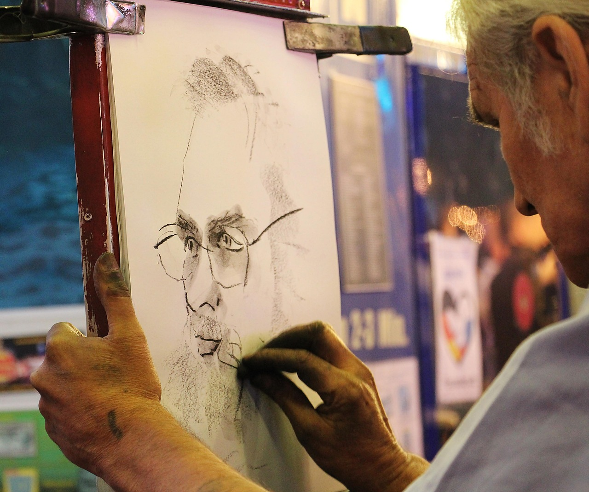
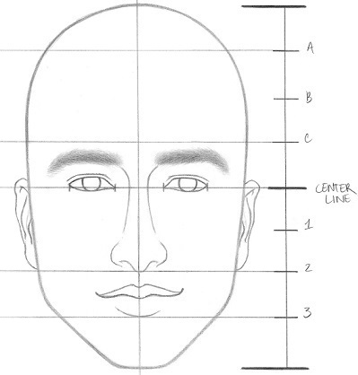

Solid drawing
This principle states that the artist should have a sufficient amount of knowledge in drawing, that includes drawing in 3D, perspective, shading, backgrounds, etc.

Having some knowledge in art and drawing is really important to be a professional animator. It's not enough to simply draw in 2D, you have to learn the intricacies of drawing to be able to express what you want in numerous ways. It is required to some level in order to become an animator.

Another thing in drawing that applies to this principle is to avoid symmetry. If you try to design a face and want to look everything to look proportional and symmetrical, it'll look pretty boring. Also, try to use overlapping to reduce flatness in your drawings whenever possible.